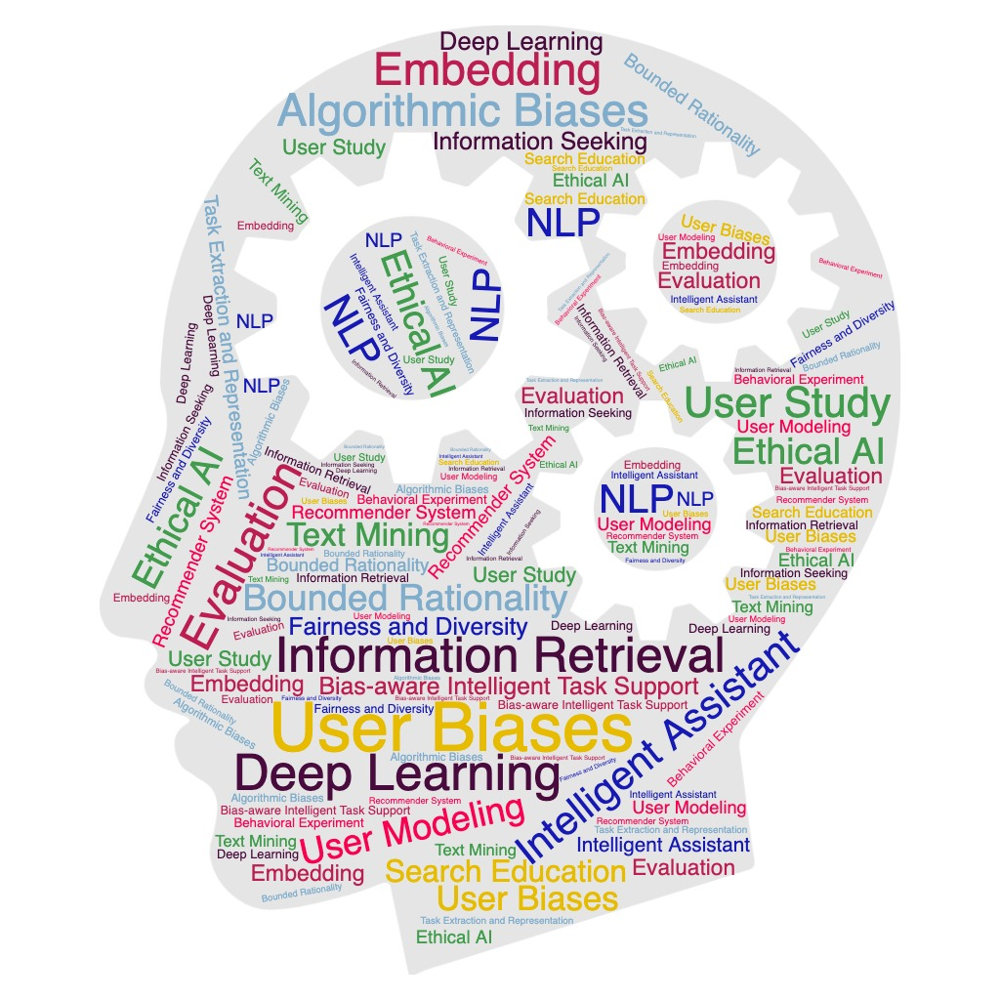

At the OU Human-Computer Interaction and Recommendation (HCIR) Lab, we are working toward modeling and supporting people’s problem-solving and decision-making activities with intelligent information search and recommender systems, and understanding the economic, societal, and ethical impacts of advanced search and recommendation algorithms.
Our long-term research goal is to provide useful, timely, fair, and responsible information support for people from diverse backgrounds and communities. Our methods include computational approaches such as data/text mining, deep learning, and natural language processing, as well as qualitative, participatory, and user study research methods. Topics of interest include user biases in information interactions, intelligent information retrieval, bias-aware recommender systems, and adaptive information system evaluation.
The Principal Investigator, Dr. Jiqun Liu, started this lab in 2020. Dr. Liu is an interdisciplinary information science researcher by training, with research interests, including information retrieval, recommender system, bounded rationality, and ethics in human-computer interaction.
Lab News
Join Us
We are actively looking for self-motivated students to join the lab and work on interesting cutting-edge problems in HCIR-related topics. Research opportunities are available at both undergraduate and graduate levels. We are especially interested in students with any of the following backgrounds:
- Human-Computer Interaction, Interactive Information Seeking/Retrieval, Cognitive Psychology or Experimental Economics using quantitative or qualitative methods (or both);
- Machine Learning, Natural Language Processing (NLP), or Text/Data Mining.